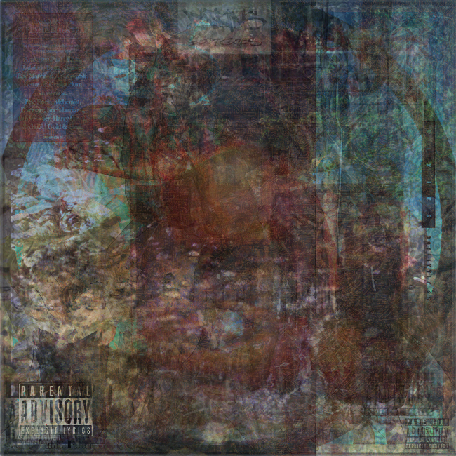
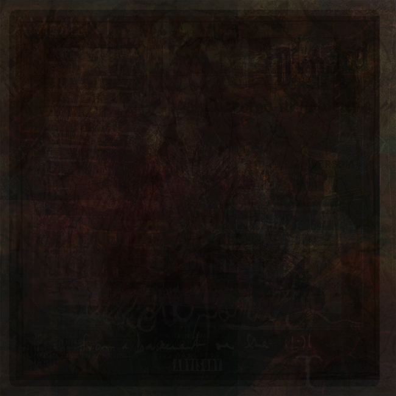
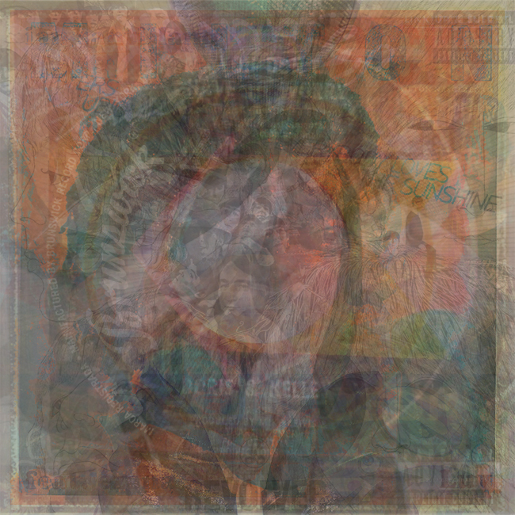

a compilation of how i'm feeling, digital composite images and sound compositions, 2019
My concept for the final project was to put together all the different songs I listen to when I'm feeling a certain mood and create an audio composition that blends all these songs together to isolate the one thing that ties all these songs together: the emotion it exudes. On top of that, I decided to put together all the artwork of those same songs and create photo composites of the artwork laid on top of each other to again see how the mood of the artwork fits the overall mood of the songs. Each compilation represents a mood that I feel when I put on those songs, for example, Compilation 1 represents anger; Compilation 2 represents sadness; and Compilation 3 represents happiness. I chose these specific mediums because my overall goal was to be able to upload these compilations to iTunes and be able to display them on my iPhone. That would bring the project full circle, considering that the method in which I myself listen to these songs daily is on my iPhone.

compilation 1

compilation 2

compilation 3
